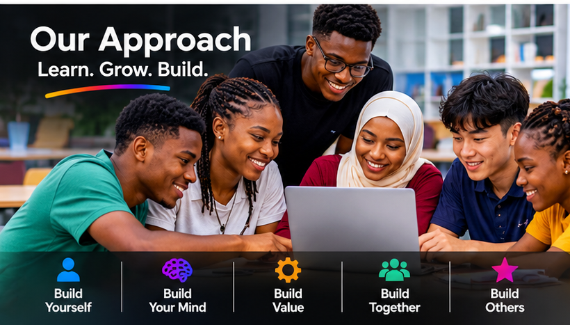
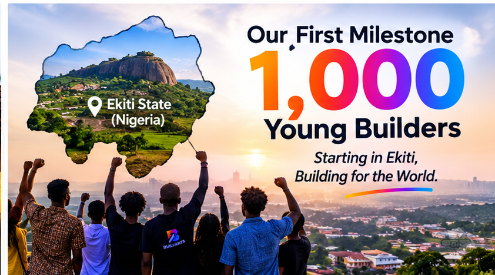

Our mission
Move from potential to purpose.Build a generation that creates value.
A global ambition, deliberately grounded in Ekiti State, Southwest Nigeria.
Purpose before scale
Our mission
BUILVANTA exists to help young people discover their potential, develop their capabilities and become purposeful individuals who can create meaningful value in their communities and the wider world.
We believe that a person's background should not determine the limits of their thinking, character, confidence, creativity or contribution to society.
Through intentional development, practical learning, collaboration and meaningful experiences, we equip young people with the mindset, knowledge, skills and values needed to take responsibility for their future, solve problems, create opportunities and help others grow.
Our mission goes beyond preparing young people to succeed individually. We want to develop people who understand that genuine progress also involves contributing to the progress of others.
We are not simply preparing young people for the future. We are helping them develop the capacity to build it.
How we put our mission into practice
Five connected ways to build.
Our approach brings personal growth, clear thinking, useful capability, collaboration and service together.

Build Yourself
Develop self-awareness, discipline, confidence, emotional maturity, integrity and a strong sense of personal responsibility.
Build Your Mind
Encourage independent thinking, curiosity, critical reasoning, creativity, intellectual growth and the courage to question, explore and learn.
Build Value
Develop practical capabilities, problem-solving skills, financial and digital literacy, innovation, entrepreneurship and the ability to turn ideas into useful solutions.
Build Together
Create an environment where young people from different backgrounds, cultures, experiences and perspectives can learn, collaborate, exchange ideas and grow together.
Build Others
Encourage leadership, mentorship, service, generosity and the responsibility to create opportunities and contribute to the growth of other people.
Our first milestone
Starting with 1,000. Building towards something much bigger.
Beginning with our initial target communities in Ekiti State, Nigeria.

Every meaningful movement needs a starting point. Our first major implementation milestone is to engage, develop and learn alongside 1,000 young people, beginning with our initial target communities in Ekiti State, Nigeria.
This first milestone is intentional. We want to build more than a community with impressive membership numbers. We want to establish a meaningful development experience that produces observable growth in mindset, character, practical ability, confidence, leadership and contribution.
As we work towards this milestone, we will:
- Engage young people through structured learning and development experiences.
- Encourage practical application of knowledge rather than learning in theory alone.
- Create opportunities for collaboration, innovation, mentorship and leadership.
- Evaluate participation, progress and the effectiveness of our programmes.
- Listen to feedback, identify gaps and continuously improve our approach.
- Establish a model that can be responsibly expanded to reach more young people.
The 1,000-person milestone is our first significant step, not the final destination.
A global vision, a local beginning
A global ambition begins with meaningful action.
BUILVANTA is built around a vision that extends beyond geographical boundaries. We believe the need to develop capable, thoughtful, responsible and value-driven young people is not unique to one country or continent.
However, we recognise that building something meaningful requires focus, commitment and a strong foundation. For this reason, our initial implementation will focus on Ekiti State, Southwest Nigeria.
Starting in Ekiti allows us to work more closely with our immediate communities, understand local realities, engage participants more effectively, evaluate our programmes and establish the operational foundation required for long-term growth.
- Starting pointEkiti StateFocused implementation and learning alongside our initial communities.
- Building the foundationNigeriaStrengthen the model and expand responsibly as experience and capacity grow.
- Long-term horizonThe wider worldA global community and development model to aspire to over time.
Our decision to begin locally is not a declaration that our mission ends locally. It is a deliberate first step towards building something that can grow beyond its starting point. We intend to learn from the communities we serve, strengthen our approach through experience and use those lessons to guide future expansion.
BUILVANTA welcomes a world where young people, regardless of nationality, race, religion, social background or economic circumstances, have opportunities to learn, develop and contribute. Although our initial programmes and direct implementation will prioritise Ekiti State, young people elsewhere can express interest, join our wider community and connect with our mission. Access to certain physical programmes, activities and opportunities may initially depend on location, available resources and implementation capacity.
We are starting in Ekiti, but we are building with the world in mind.
Accountability in action
How we measure progress.
Ambition must be supported by responsibility and measurable progress. Our commitment is not simply to attract young people, but to create an environment where meaningful development can take place.
- Participation and engagement.
- Growth in knowledge, confidence and practical capabilities.
- The ability to apply learning to real-life situations.
- Collaboration, leadership and problem-solving.
- Projects, ideas and solutions developed by participants.
- Contributions participants make to other people and their communities.
- Feedback and lessons that can improve future programmes.
We understand that development takes time. We will therefore prioritise consistent progress, responsible implementation and learning over impressive claims or numbers without substance. Our intention is to establish a strong foundation that can support sustainable growth.
One person. One community. One generation.
The future is not something we simply wait for.
It is something we prepare for, participate in and build.
At BUILVANTA, we believe every young person has the potential to become more than their present circumstances suggest. We want to create an environment where young people develop themselves, discover their abilities, create value, work with others and become active contributors to a better society.
BUILVANTA — THE GENERATION THAT BUILDS.
Build Yourself. Build Value. Build Others.
Join the BUILVANTA community